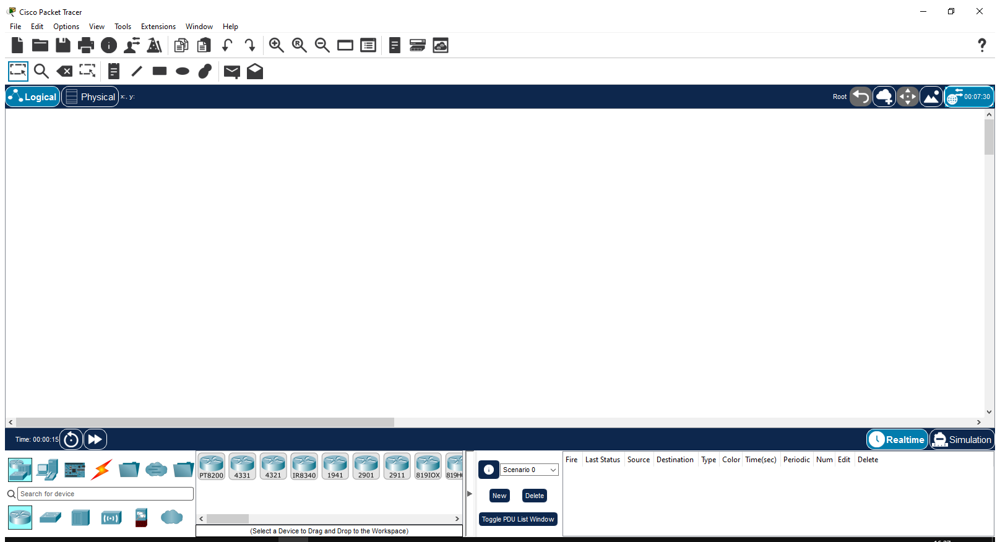
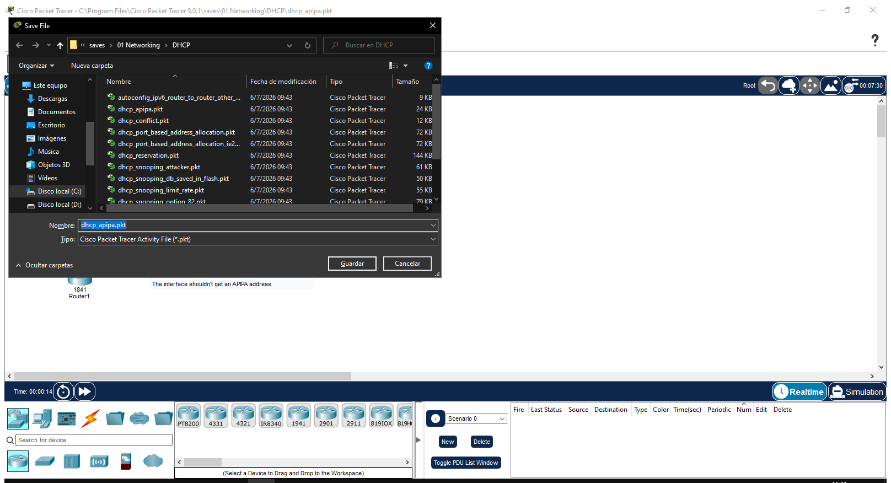
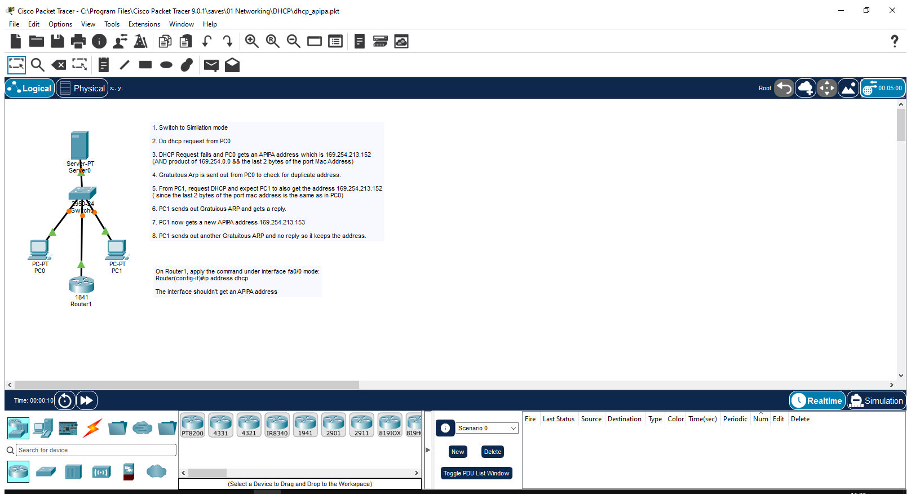
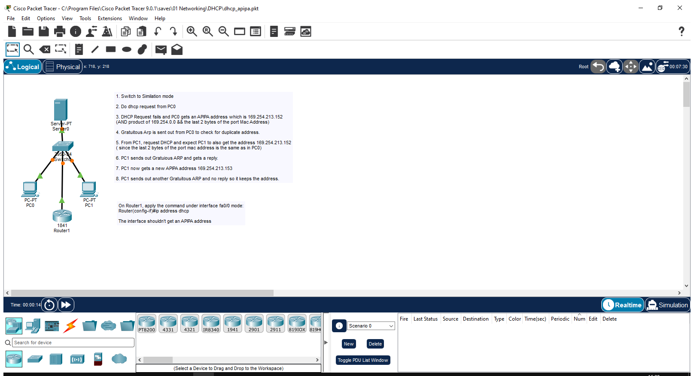
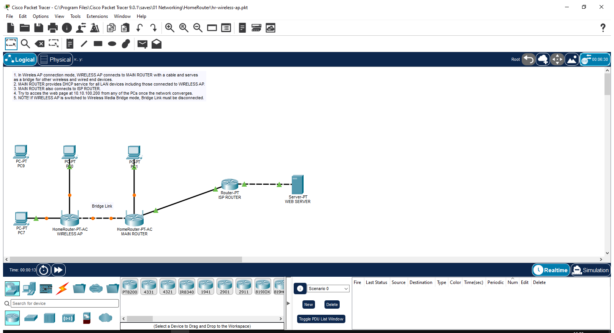
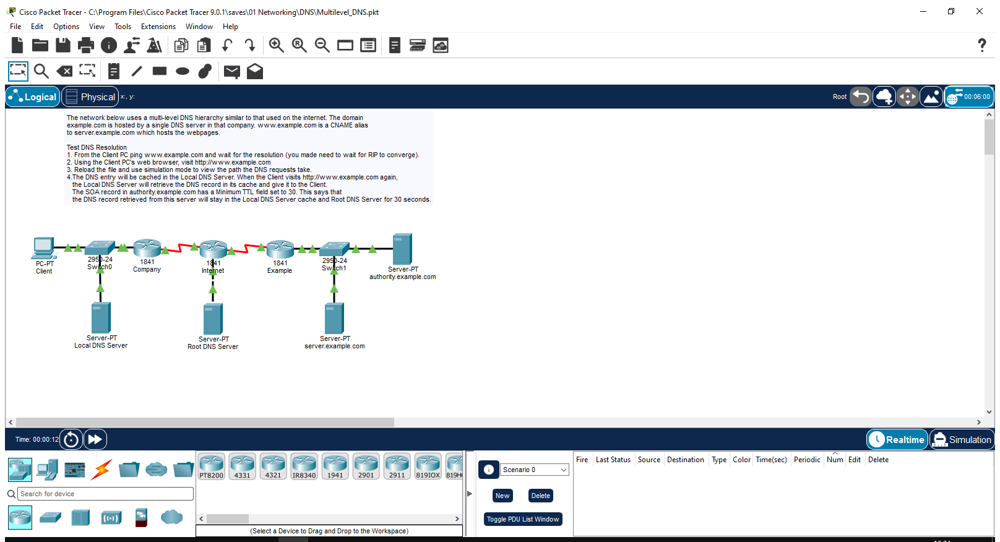
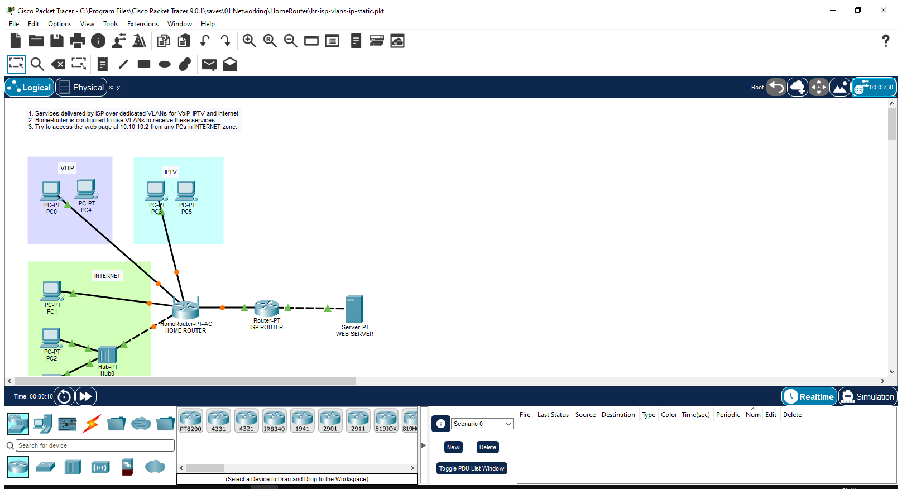

Packet Tracer es un programa en ingles. Abajo de cada captura hay un glosario que traduce los terminos principales al espanol.

Ventana principal de Cisco Packet Tracer. Arriba la barra de menus, en el centro el lienzo donde se arma la red, y abajo la barra de equipos para arrastrar dispositivos.
Glosario de la captura (ingles -> espanol):
| Termino en ingles | Significado en espanol |
|---|---|
| File, Edit, Options, View, Tools... | Menus principales del programa |
| Realtime / Simulation | Modo tiempo real / Modo simulacion (ver paquetes paso a paso) |
| Physical / Logical | Vista fisica (cables reales) / Vista logica (topologia de red) |
| End Devices, Switches, Routers, Connections | Categorias de equipos: dispositivos finales, switches, routers, conexiones |
| New / Open / Save | Nuevo / Abrir / Guardar archivo |

En modo simulacion se pueden ver los paquetes de datos viajando por la red paso a paso. Sirve para detectar problemas de conectividad.
Glosario de la captura (ingles -> espanol):
| Termino en ingles | Significado en espanol |
|---|---|
| Simulation | Modo simulacion (ver paquetes paso a paso) |
| Auto Capture / Play | Captura automatica / Reproducir |
| Event List | Lista de eventos (paquetes en transito) |
| PDU | Unidad de datos del protocolo (paquete) |
| Filter | Filtrar tipos de paquetes a mostrar |
| Reset Simulation | Reiniciar la simulacion |
Arma una red de casa con 2 PCs, 1 switch y 1 router. Configura las IPs y prueba conectividad con ping.

Red local donde las computadoras reciben su direccion IP automaticamente del servidor DHCP. Se ven los equipos conectados al switch.
Glosario de la captura (ingles -> espanol):
| Termino en ingles | Significado en espanol |
|---|---|
| DHCP Server | Servidor que asigna IPs automaticamente |
| IP Address | Direccion IP del equipo |
| Subnet Mask | Mascara de subred (ej: 255.255.255.0) |
| Default Gateway | Puerta de enlace (IP del router) |
| FastEthernet0/0 | Interfaz de red del router (puerto Ethernet) |
| Copper Straight-Through | Cable recto (PC a switch) |

Al hacer doble clic en un dispositivo se abre su panel de configuracion. Desde ahi se asignan IPs, se configura el router por linea de comandos, y se verifica la conectividad.
Glosario de la captura (ingles -> espanol):
| Termino en ingles | Significado en espanol |
|---|---|
| Desktop | Escritorio del dispositivo (apps como IP Config, Command Prompt) |
| Config | Configuracion basica del dispositivo |
| CLI | Linea de comandos (para routers y switches) |
| Physical | Vista fisica del dispositivo (modulos, puertos) |
| IP Configuration | Configuracion de direccion IP |
| Command Prompt | Terminal de comandos (para hacer ping) |
| no shutdown | Comando para activar una interfaz de red |
Que se entrega: Archivo red-casa.pkt con la LAN configurada y ping exitoso entre PCs.
Arma una red inalambrica con 1 access point y 2 laptops con WiFi. Configura SSID y seguridad WPA2.

Access point configurado con nombre de red (SSID) y seguridad WPA2. Los dispositivos con WiFi se conectan a esta red ingresando la contrasena.
Glosario de la captura (ingles -> espanol):
| Termino en ingles | Significado en espanol |
|---|---|
| SSID | Nombre de la red WiFi |
| WPA2-PSK | Tipo de seguridad (contrasena compartida) |
| Port 1 (Wireless) | Puerto inalambrico del access point |
| PC Wireless | Configuracion WiFi de la computadora |
| Connected | Conectado exitosamente |
| DHCP | Asignacion automatica de IP |
Que se entrega: Archivo red-wifi.pkt con red WiFi configurada y dispositivos conectados.
Arma una red de supermercado con servidor DNS/DHCP, 3 cajas (PCs) y un switch. Configura IPs y servicios.

Servidor DNS que traduce nombres de dominio a direcciones IP. Las computadoras de la red consultan este servidor para resolver nombres.
Glosario de la captura (ingles -> espanol):
| Termino en ingles | Significado en espanol |
|---|---|
| DNS Service | Servicio DNS (traduce nombres a IPs) |
| DHCP Service | Servicio DHCP (asigna IPs automaticamente) |
| Resource Records | Registros DNS (A, CNAME, MX, etc.) |
| Name | Nombre de dominio (ej: www.ejemplo.com) |
| Address | Direccion IP asociada al nombre |
| ping www.ejemplo.com | Comando para probar resolucion DNS |
Que se entrega: Archivo red-supermercado.pkt con servidor y cajas configurados.
Arma una red WAN con 2 routers conectados por un enlace serial, cada uno con su LAN local. Prueba conectividad entre sedes.

Dos routers conectados por un enlace serial (WAN). Cada router tiene su red local y rutas estaticas hacia la otra red, permitiendo comunicacion entre sedes.
Glosario de la captura (ingles -> espanol):
| Termino en ingles | Significado en espanol |
|---|---|
| Serial0/0/0 | Interfaz serial del router (enlace WAN) |
| DCE / DTE | Tipos de cable serial (DCE provee clock) |
| ip route | Comando para agregar ruta estatica |
| no shutdown | Activar la interfaz |
| FastEthernet0/0 | Interfaz LAN del router |
| ping | Comando para probar conectividad |
Que se entrega: Archivo red-wan.pkt con 2 sedes conectadas y ping exitoso.